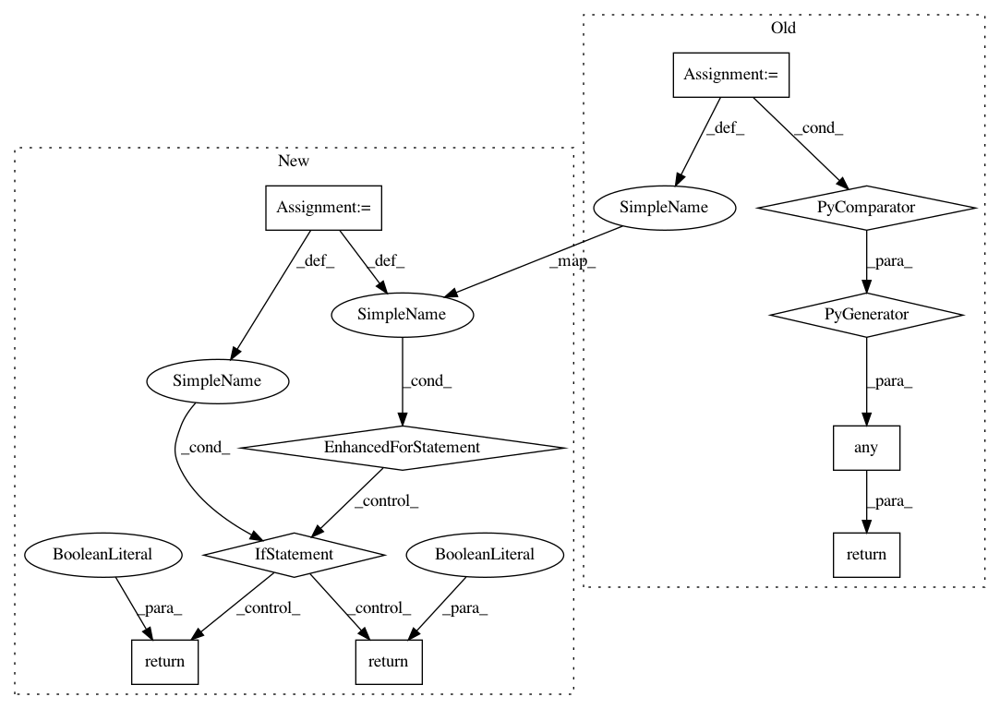

4f3ec507fb0c87f0fa25f3dee5d7006e0c3dfecd,third_party/nucleus/util/variant_utils.py,,is_variant_call,#Any#Any#Any#Any#,485
Before Change
else:
if call_indices is None:
call_indices = range(len(variant.calls))
return any(
any(g > 0
for g in variant.calls[i].genotype) or
(no_calls_are_variant and
not variantcall_utils.has_genotypes(variant.calls[i]))
for i in call_indices)
def has_calls(variant):
Does variant have any genotype calls?
After Change
if call_indices is None:
call_indices = range(len(variant.calls))
for i in call_indices:
for g in variant.calls[i].genotype:
if g > 0 or (no_calls_are_variant and g < 0):
return True
return False
def has_calls(variant):
Does variant have any genotype calls?
In pattern: SUPERPATTERN
Frequency: 3
Non-data size: 10
Instances
Project Name: google/deepvariant
Commit Name: 4f3ec507fb0c87f0fa25f3dee5d7006e0c3dfecd
Time: 2019-10-03
Author: marianattestad@google.com
File Name: third_party/nucleus/util/variant_utils.py
Class Name:
Method Name: is_variant_call
Project Name: google/nucleus
Commit Name: 1c0e8b29a453c40b9e1828e9213b5b03d1f11a2f
Time: 2019-10-03
Author: no-reply@google.com
File Name: nucleus/util/variant_utils.py
Class Name:
Method Name: is_variant_call
Project Name: aws/sagemaker-python-sdk
Commit Name: 979be118317eae88df11e3b3f04bf239943ff920
Time: 2020-05-05
Author: chuyangdeng@gmail.com
File Name: src/sagemaker/tensorflow/estimator.py
Class Name: Tensorboard
Method Name: _cmd_exists